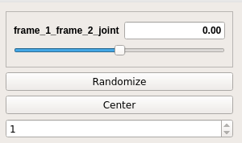
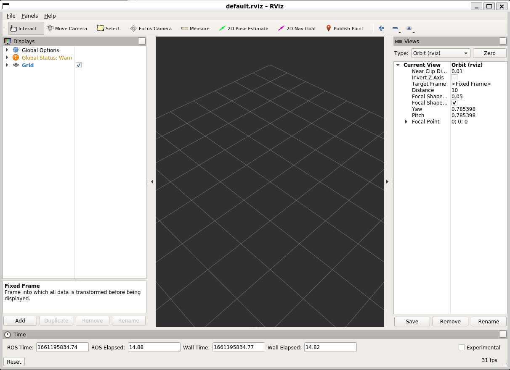
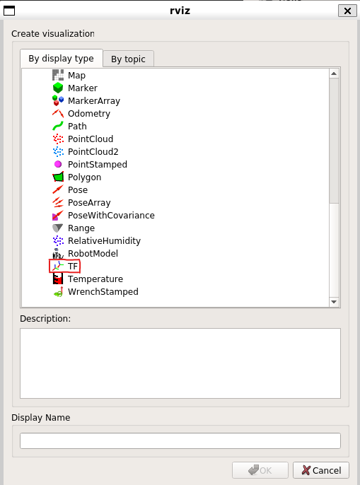
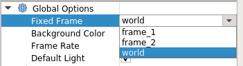
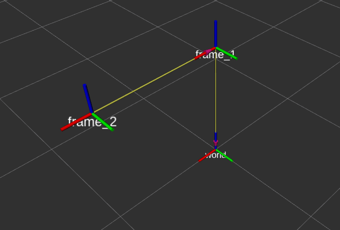

Describing frame relations with URDF
Describing frame relations with URDF
There is another approach to describe relations between different coordinate frames that is not writing Python scripts. That is writing something called the Unified Robot Description Format -- URDF. This is representation of the robot model written in an XML format. In this part of the workshop, we will learn how how it is structured, its syntax and how it is used in practice.
Simple URDF example
Let's take the following URDF and examine what we see:
<robot name="simple" xmlns:xacro="http://www.ros.org/wiki/xacro">
<link name="world"/>
<link name="frame_1"/>
<joint name="world_frame_1_joint" type="fixed">
<parent link="world"/>
<origin xyz="0.0 0.0 1.0" rpy="0.0 0.0 0.0"/>
<child link="frame_1"/>
</joint>
</robot>
In the above URDF we are defining two links: world and frame_1 (the <link> tag). We then define a <joint> tag that describes their relation: frame_1 is offset from world by 1m along the Z axis.
With Python scripts it was easy -- we ran the script and we were able to observe these relations. Working with URDFs requires some extra steps.
Copy the content of the code snippet above and store it into a file called two_frames.urdf. Then, load this file onto the parameter server as /robot_description:
Next, start something called the robot_state_publisher node (explanation follows):
Open another terminal (or if you're a pro user put the robot_state_publisher into the background) and check if the transformation is present on TF with tf_echo:
$ rosrun tf tf_echo world frame_1
At time 0.000
- Translation: [0.000, 0.000, 1.000]
- Rotation: in Quaternion [0.000, 0.000, 0.000, 1.000]
in RPY (radian) [0.000, -0.000, 0.000]
in RPY (degree) [0.000, -0.000, 0.000]
Question: From which topic do you expect this data to come from,
/tfor/tf_static? Hint: observe the attributes of the<joint>tag.
Terminate tf_echo and robot_state_publisher before continuing to the next section.
Robot state publisher and the joint state publisher
What we observed in the demonstration above is how URDFs work in combination with the robot_state_publisher. The above example was for a static coordinate frame relation. As you are very well aware, robot manipulators are many things, static is not one of them. To help with this, URDF supports different types of attributes for the joint type. However, if we describe it as something different than static, we need another piece of information. Let's explore this.
<robot name="simple" xmlns:xacro="http://www.ros.org/wiki/xacro">
<link name="world"/>
<link name="frame_1"/>
<link name="frame_2"/>
<joint name="world_frame_1_joint" type="fixed">
<parent link="world"/>
<origin xyz="0.0 0.0 1.0" rpy="0.0 0.0 0.0"/>
<child link="frame_1"/>
</joint>
<joint name="frame_1_frame_2_joint" type="revolute">
<parent link="frame_1"/>
<origin xyz="1.0 0.0 0.0" rpy="0.0 0.0 0.0"/>
<axis xyz="0 0 1" />
<child link="frame_2"/>
<limit lower="-3.14" upper="3.14" effort="1" velocity="1"/>
</joint>
</robot>
/robot_description.
Once done, run the robot_state_publisher again.
We can now observe what's available on TF. We first confirm that the relation between world and frame_1 still works:
frame_2, we also expect it to be visible, right?
$ rosrun tf tf_echo frame_1 frame_2
Failure at 1661194747.531982600
Exception thrown:"frame_2" passed to lookupTransform argument source_frame does not exist.
The current list of frames is:
Frame frame_1 exists with parent world.
As we explained before, if we use a joint of a type different than static, we need another piece of information. That is, the value of the joint motion status depending on the joint type. In our case we are dealing with revolute so we will need the angles for which the frame is turned around the joint.
There is a handy tool available in ROS to help us with that. It's called the joint_state_publisher. This program will read the contents of the /robot_description parameter and publish "some" joint values. Let's try it out to see how it works. Open a new terminal and run the following command
In the other terminal use tf_echo to inspect the result:
rosrun tf tf_echo frame_1 frame_2
At time 1661195066.017
- Translation: [1.000, 0.000, 0.000]
- Rotation: in Quaternion [0.000, 0.000, 0.000, 1.000]
in RPY (radian) [0.000, -0.000, 0.000]
in RPY (degree) [0.000, -0.000, 0.000]
Tadaaah! Before we move on, observe the content of the /joint_states topic:
Note: The
-n1flag ofrostopic echotells it to print only the first received message and then exit.
We can now modify the value of the joint by terminating joint_state_publisher and run joint_state_publisher_gui instead:
rosrun joint_state_publisher_gui joint_state_publisher_gui

Try moving the slider and observe the output of tf_echo.
Before moving to the next part, simply terminate tf_echo. Leave robot_state_publisher and joint_state_publisher_gui running.
Visualizing transforms in Rviz
By now you are probably tired of observing numbers changing and want to see some action. In this section, we will have a quick look at Rviz - a tool for visualizing robots in ROS.
Let's give it a try by opening it:
You should be greeted by the following screen: You are probably disappointed that you still don't see anything interesting. Bear with us. From here, click on the Add button on the bottom right. A new window should appear:

From the list select TF and click Ok.
In the last step, we need to tell Rviz which of the frames is our origin. From the drop-down menu under Global Options select world:

If you did everything correctly, you should now be able to see the three coordinate frames we described in the URDF:

Try moving the slider from before (i.e. joint_state_publisher_gui) and observe how the frames react.
Assignment
In this assignment you will be creating two different Python scripts that will be used also during the practical assignment. It's in your interest to write them as good as possible so they help you later on.
First assignment - store TF data
Write a Python script that stores the transformation between one frame (e.g. world) and another (e.g. frame_2) into a Pickle file (make up an extension, for example .dat).
Note: Make sure that
robot_state_publisherandjoint_satate_publisherare running!
For this assignment we prepared the following code snippet that you should complete:
#! /usr/bin/env python
import rospy
import pickle
import os
import tf2_ros
if __name__ == '__main__':
rospy.init_node('tf_saver')
rospy.loginfo("TF saver started!")
tf_buffer = tf2_ros.Buffer()
tf_listener = tf2_ros.TransformListener(tf_buffer)
rospy.sleep(1)
stored_data = {}
##### FILL IN THE APPROPRIATE FILENAME. HINT: USE `raw_input()`
file_name = ""
outfile = open(file_name,'wb')
saved_data = {}
#########################
##### STUDENT WRITES ####
#########################
# Hint - Use the tf_buffer.lookup_transform() method to retrieve the transform.
# Example:
# transformation = tf_buffer.lookup_transform(from_frame, to_frame, rospy.Time(0))
# Note - from_frame and to_frame need to be defined!
#########################
pickle.dump(saved_data, outfile)
outfile.close()
Second assignment - load data to TF
Write a Python scrip that will read the Pickle file produced by the saver script and publish the transforms onto TF. We don't expect these frames to change in the future. You can therefore use the StaticTransformBroadcaster() class to publish them.
For this assignment we prepared the following code snippet that you should complete:
#! /usr/bin/env python
import rospy
import pickle
if __name__ == '__main__':
# Init the node
rospy.init_node('tf_loader')
##### FILL IN THE APPROPRIATE FILENAME. HINT: USE `raw_input()`
file_name = ""
infile = open(file_name,'rb')
stored_poses = pickle.load(infile)
infile.close()
#########################
##### STUDENT WRITES ####
#########################
#########################
rospy.spin()